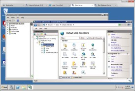
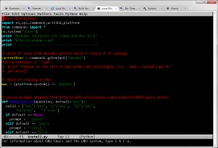
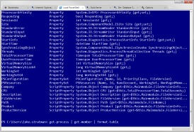
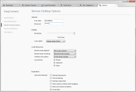
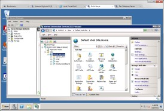
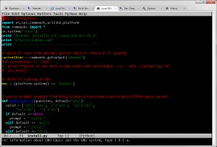
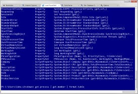
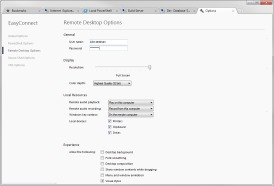

EasyConnect
Tabbed remote desktop application with a Chrome-like UI.
This is a Windows tabbed remote desktop application whose UI was designed to resemble Chrome's. Currently it supports Microsoft's Remote Desktop Protocol (RDP), Secure Shell (SSH), PowerShell, and VNC, but has a plugin architecture designed to enable third-party support for other protocols such as Citrix, etc.
 







{kind=link}
{kind=link}
{kind=link}
{kind=link}

Change Log
v1.3
- Added the ability to tear tabs out of windows and combine them with other windows.
- Updated the application look and feel to be consistent with the latest version of Chrome.
- Added support for PowerShell.
- Updated the installer to use WiX instead of the outdated Visual Studio Installer project.
- Improved the handling of disconnected sessions. Now, instead of being presented with a modal dialog box, the icon for the tab will change and you will be able to click a button in the tab to reconnect or view any error messages associated with the disconnect.
- The Aero Peek functionality has been disabled.
- Added support for VNC.
- Added support for using an RSA key container to encrypt passwords in settings files instead of using a symmetric key that forced the user to enter an explicit password every time.
- Added the ability to associate usernames and passwords with bookmark folders, meaning that connections within those folders will inherit those credentials instead of forcing the user to specify the credentials for each individual connection.
- Improved the reliability of the Aero Peek functionality in the taskbar.
- Improved the reliability of opening bookmarks in new windows.
- Made the context menu that appears when right-clicking on a bookmarks folder in the treeview and the one that appears when right-clicking on a folder in the list view consistent.
- Added support for SSH.
- Refactored the Win32 interop code and separated it into another library.
- Added shortcut keys to create new tabs (Ctrl+T) and cycle through them (Ctrl+Tab and Ctrl+Shift+Tab).
- Disabled automatic update functionality until issues can be worked out.
- Cleaned up and commented the codebase.
- Added OmniBar-like functionality to auto-complete entries in the connection bar.
- Drag-and-drop support added to the bookmarks manager.
- Added an option to auto-hide the connection bar.
- Context menu item added to the bookmarks manager that allows you to set the password for all connections in a folder and its descendants.
- Fixed auto-update functionality so that it actually works going forward.
- Cleaned up and fixed Aero peek functionality.
- Fixed issue opening up incorrect bookmark from the bookmarks menu in the connection window.
- Added support for automatic updating going forward using wyUpdate.
- Plugin architecture added to support other remote connection protocols.
- Tabs can be dragged to re-order them within the window.
- Options window now fully integrated within the UI.
- RDP connections can now be specified to connect to the server's admin channel.
- Opening a new tab from the bookmarks manager in the midst of other tabs no longer causes the last tab in the list to become inaccessible.